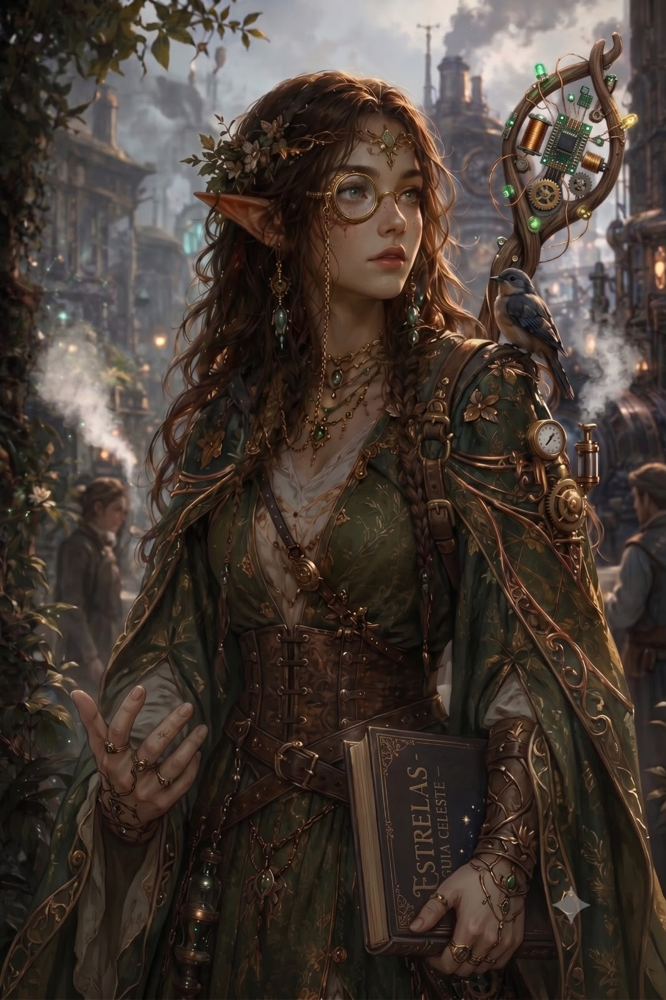

Natureza e terreno
A visão impossível
Lylianna viu algo que seu Círculo julgou loucura: máquinas cuidando da terra em vez de destruí-la. Agora ela carrega um livro de Cyriss e a teimosia de quem quer entender o impossível.
Background
Lylianna foi criada em uma aldeia isolada do Círculo Orboros, a seita selvagem de druidas do cenário, aprendendo o que todos os druidas aprendem sobre a fúria da natureza. Até que, um dia, algo que nem ela soube explicar aconteceu.
Em uma de suas caminhadas, ao olhar de longe a cidade industrial de Corvis com toda sua tecnologia a vapor, ela sentiu um forte aperto no peito, e então um clarão a atingiu, quase a cegando. Porém, quando a sua visão foi voltando ao lugar, ela viu algo em que não conseguia acreditar: um local onde a tecnologia e os ensinamentos druídicos estavam em harmonia. Próteses em animais que tinham sofrido ferimentos, aparatos mecânicos para cuidar de árvores e plantações, dispositivos que purificavam o solo. Foi algo rápido e momentâneo, mas que a tocou profundamente.
Ela voltou à sua aldeia dizendo ter tido essa visão, e então todos os druidas do Círculo a julgaram louca. Para eles, um mundo onde a tecnologia e a magia da terra vivessem em harmonia jamais aconteceria; a tecnologia sempre iria devastar a natureza.
Ela não conseguia tirar tudo o que havia visto da mente. Quanto mais pensava, mais a ideia ficava clara: algo teria que mudar essa realidade. Foi então que ela se prendeu a estudos e até a conhecimentos mais proibidos para tentar achar algo que tivesse o mínimo de sentido em tudo aquilo.
Foi então que ela encontrou uma cabana abandonada na floresta próxima à sua aldeia. Era algo incomum, pois os druidas conheciam muito bem aquela região e nunca tinham visto tal cabana. Parece que algo a chamava. Ao entrar, ela se deparou com o local abandonado e encontrou um livro antigo. Era uma linguagem há muito esquecida, a linguagem sagrada de Cyriss, a Donzela da Engrenagem, a deusa misteriosa da matemática, das estrelas e da geometria perfeita. Porém, para ela, algumas páginas e símbolos fluíam completamente na mente.
Então ela tomou uma decisão: sair de sua aldeia e procurar meios para entender esse livro, pois sabe que a resposta para a visão que teve pertence a Cyriss e está escondida nessas páginas.
Por isso, ela é uma druida andarilha das estrelas. Ela não se incomoda com a tecnologia; claro que tudo ainda é novo para ela e ela mantém suas raízes de preservação da natureza, mas está disposta a entender mais sobre as máquinas para alcançar, um dia, a visão do mundo ideal que recebeu.
Em jogo
Na primeira sessão, Lylianna entrou como ponte entre a companhia e o pântano. Sua presença trouxe controle, leitura do ambiente e uma camada mística para o mistério que aguardava em Corvis.